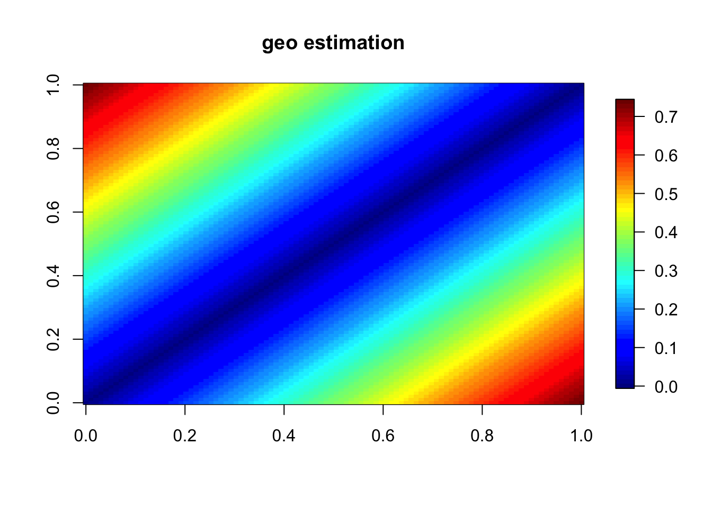

Test if analytic derivation of geodesic distance for curves from sim_functional_data.R is correct
library(reticulate)
use_python('/usr/local/bin/python3.7',required=TRUE)
#use_python('/Users/UQAM/anaconda3/bin/python',required=TRUE)Check with py_config()
py_config()## python: /usr/local/bin/python3.7
## libpython: /Library/Frameworks/Python.framework/Versions/3.7/lib/python3.7/config-3.7m-darwin/libpython3.7.dylib
## pythonhome: /Library/Frameworks/Python.framework/Versions/3.7:/Library/Frameworks/Python.framework/Versions/3.7
## version: 3.7.0 (v3.7.0:1bf9cc5093, Jun 26 2018, 23:26:24) [Clang 6.0 (clang-600.0.57)]
## numpy: /Library/Frameworks/Python.framework/Versions/3.7/lib/python3.7/site-packages/numpy
## numpy_version: 1.15.1
##
## NOTE: Python version was forced by use_python functionsource('sim_functional_data.R')## Loading required package: spam## Loading required package: dotCall64## Loading required package: grid## Spam version 2.2-0 (2018-06-19) is loaded.
## Type 'help( Spam)' or 'demo( spam)' for a short introduction
## and overview of this package.
## Help for individual functions is also obtained by adding the
## suffix '.spam' to the function name, e.g. 'help( chol.spam)'.##
## Attaching package: 'spam'## The following objects are masked from 'package:base':
##
## backsolve, forwardsolve## Loading required package: maps## See www.image.ucar.edu/~nychka/Fields for
## a vignette and other supplements.The function sim_functional_data.R allows specification of several simulatin scenarios. The samplesize is purposefully set very high for reasons explained below.
# Generate data
sim <- sim_functional_data(sce=3,samplesize=100)
The output actually contains more than just the simulated functional data. In particular, it contains the in-sample pairwise geodesic distance matrix (analytic_geo) via analytic derivation. The purpose of this notebook is to see if our analytic derivations match numerical results.
names(sim)## [1] "noiseless_data" "noisy_data" "analytic_geo" "grid"
## [5] "reg_grid"We would like to compare sim$analytic_geo to geodesic distance estimation via Floyd’s algorithm for the noiseless (discretised) curve. This algorithm is guaranteed to do well if we sample the manifold densely enough? (That’s why we set the samplesize to be quite high initially.)
get_min_num_neighbors = import_from_path("get_min_num_neighbors",path='.')
getIsomapGdist = import_from_path("getIsomapGdist",path='.')
attach(sim)
a = reg_grid[1]
b = tail(reg_grid,1)
K = length(reg_grid)
samplesize = dim(noiseless_data)[1]
noiseless_data_tmp = (sqrt((b-a)/K))*noiseless_data
# Find a grid of possible values for the number of neigbors
num_neigh_min=get_min_num_neighbors$get_min_num_neighbors(noiseless_data_tmp)
num_neigh_true=seq(num_neigh_min,samplesize/2,by=2)
# Calculate the geo matrix for each number of neighbors and keep the one that gives the minimal error
norm_analytic_geo = sqrt(sum(analytic_geo^2))
Error_true_mani_K= rep(0,length(num_neigh_true))
for(j in 1:length(num_neigh_true)){
IsomapGdist = getIsomapGdist$getIsomapGdist(noiseless_data_tmp,num_neigh_true[j])
Error_true_mani_K[j]=sqrt(sum((IsomapGdist - analytic_geo )^2))/norm_analytic_geo
}
ind_op_true=min(which(Error_true_mani_K==min(Error_true_mani_K)))
estim_geo_noiseless_data = getIsomapGdist$getIsomapGdist(noiseless_data_tmp,num_neigh_true[ind_op_true])
image.plot(estim_geo_noiseless_data,main='geo estimation')
If the analytic derviation is correct, then estim_geo_noiseless_data should be extremely similar to analytic_geo. We can assess their closeness using assess_goodness_estimation.R. Three assessment metrics are returned. If the calculation is correct, rmse should be close to zero and epsilon_isometry_auc and pearson_corr should both be close to 1. Note that running this notebook for sce=1 gives rmse on the order of e-16.
library(MESS)## Loading required package: geepack## Loading required package: geeM## Loading required package: Matrix##
## Attaching package: 'Matrix'## The following object is masked from 'package:spam':
##
## detsource('assess_goodness_estimation.R')
assess_goodness_estimation(estim_geo_noiseless_data,sim$analytic_geo)## $rmse
## [1] 0.01070586
##
## $epsilon_isometry_auc
## [1] 0.9919957
##
## $pearson_corr
## cor
## 0.9998055